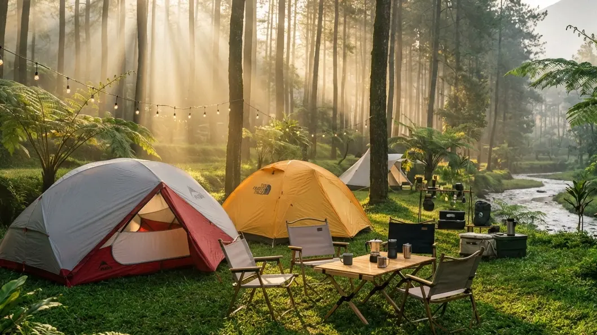

1. Lelah dengan Kepenatan Kota? Saatnya Kembali ke Alam
Menjalani rutinitas harian di tengah kota metropolitan yang padat, menghadapi kemacetan panjang setiap pagi, dan berkutat dengan tenggat waktu pekerjaan seringkali membuat energi mental kita terkuras habis. Fenomena kelelahan ekstrem (burnout) kini menjadi pemandangan yang lazim. Banyak orang mencoba mengobati kepenatan ini dengan pergi ke pusat perbelanjaan atau sekadar memesan kamar hotel mewah (*staycation*). Namun, terkadang tembok beton dan pendingin ruangan buatan tidak cukup untuk me-reset kejenuhan jiwa.
Jika Anda mencari pelarian yang benar-benar menyegarkan namun enggan bersusah payah, maka artikel yang membahas Mau Camping Tanpa Ribet? Coba Serunya Menginap di Area Kemah Hutan Pinus Batu ini ditulis khusus untuk Anda. Kita akan mengulas tuntas bagaimana Anda dan keluarga bisa menikmati syahdunya tidur di alam bebas, menghirup udara pegunungan yang murni, tanpa harus mengalami drama mendirikan tenda, mencari kayu bakar, atau kebingungan mencari toilet yang bersih.
2. Mengapa Hutan Pinus Batu Menjadi Destinasi Favorit?
Kota Batu telah lama dinobatkan sebagai primadona ekowisata di Jawa Timur. Dari sekian banyak bentang alam yang ada, kawasan hutan pinus selalu memiliki daya magis tersendiri yang mampu membius para pengunjungnya.
Kesejukan Udara Bebas Polusi
Berada di elevasi ketinggian yang ideal, udara di perbukitan Batu terasa amat sejuk dan terbebas dari partikel debu maupun polusi asap kendaraan. Struktur batang pohon pinus yang menjulang lurus dengan daun jarum di bagian atas membentuk sebuah kanopi alami. Kanopi ini tidak hanya menahan terik matahari siang sehingga area di bawahnya tetap terasa teduh, tetapi juga berfungsi sebagai paru-paru raksasa yang memompa pasokan oksigen bersih ke dalam sistem pernapasan Anda.
Aroma Terapi Alami Penurun Stres
Pernahkah Anda menyadari bahwa berjalan di sela-sela pohon pinus membuat perasaan Anda menjadi lebih damai? Secara medis, pohon pinus melepaskan senyawa organik bernama fitonsida (minyak atsiri alami) ke udara bebas. Menghirup senyawa ini bekerja layaknya sesi aromaterapi berskala besar yang terbukti secara klinis mampu menurunkan ritme detak jantung yang cepat, menekan produksi hormon kortisol (pemicu stres), dan memberikan efek relaksasi yang amat dalam.
BACA JUGA (Keindahan Alam):
3. Solusi Kemah Tanpa Ribet: Apa Itu Comfort Camping?
Bayangan tentang berkemah di masa lalu selalu identik dengan ransel yang sangat berat, keringat bercucuran saat memasang kerangka tenda, dan ketidaknyamanan saat tidur. Namun, industri pariwisata telah berevolusi pesat menuju era Comfort Camping (kemah nyaman).
Tinggalkan Peralatan Berat di Rumah
Pertanyaan Mau Camping Tanpa Ribet? kini telah terjawab secara nyata. Pengelola perkemahan modern kini menawarkan sistem penyewaan paket All-In. Ini berarti, saat Anda tiba di lokasi, sebuah tenda spesifikasi gunung yang kokoh (double layer) telah berdiri dengan gagah. Anda tidak perlu lagi membeli dan membawa tenda, matras lantai, hingga kantong tidur (sleeping bag). Semua infrastruktur fisik yang berat telah diurus secara profesional oleh tim lapangan.
Fokus pada Waktu Berkualitas Bersama Keluarga
Dengan terpangkasnya waktu berjam-jam yang biasanya dihabiskan untuk urusan logistik (mendirikan tenda, mencari alas tidur, membongkar barang), Anda kini memiliki sisa waktu luang yang amat melimpah. Waktu berharga ini bisa Anda alokasikan sepenuhnya untuk mengobrol santai bersama pasangan, bermain bersama anak-anak, atau sekadar memejamkan mata menikmati hembusan angin gunung. Inilah hakikat liburan yang sesungguhnya.
4. Fasilitas Lengkap yang Memanjakan di Area Kemah
Untuk menunjang konsep "anti-ribet", sebuah area kemah diwajibkan memiliki infrastruktur penunjang yang setara dengan fasilitas penginapan konvensional.
Sanitasi Terjamin: Toilet Bersih dan Air Hangat
Kelemahan wisata alam yang paling ditakuti oleh kaum wanita dan keluarga yang membawa balita adalah buruknya fasilitas Mandi Cuci Kakus (MCK). Namun, tempat kemah premium di Batu telah mendobrak stigma kotor tersebut. Mereka membangun blok kamar mandi permanen berbahan keramik, dilengkapi kloset duduk dengan sistem flushing yang higienis, serta diawasi oleh cleaning service. Inovasi puncaknya adalah hadirnya water heater (pemanas air). Anda tidak perlu lagi gemetar kedinginan saat harus membersihkan tubuh atau mengambil air wudu di subuh yang membeku.
Konektivitas Terjaga dengan Akses Colokan Listrik
Di era digital, terputus dari aliran listrik sama dengan terputus dari peradaban. Pengelola yang peka terhadap kebutuhan wisatawan telah menarik instalasi kelistrikan yang aman hingga ke setiap titik kapling tenda. Keberadaan colokan listrik (stop kontak) ini sangat membantu Anda untuk mengisi daya baterai smartphone, menghidupkan lampu hias (string lights) untuk mempercantik suasana malam, atau menyalakan alat pemanas botol susu bagi para ibu yang membawa bayi.

Penggunaan tenda bertipe double layer yang telah disediakan oleh pengelola menjamin Anda tidur dengan nyenyak tanpa khawatir terpaan angin dan embun basah. (Dokumentasi: Batu Sunrise Camp)5. Rekomendasi Spot: Batu Sunrise Camp
Jika Anda mencari destinasi yang mampu merealisasikan seluruh kenyamanan dalam konsep Coba Serunya Menginap di Area Kemah Hutan Pinus Batu, maka Batu Sunrise Camp adalah tujuan prioritas yang wajib masuk ke dalam keranjang rencana (bucket list) liburan Anda.
Paket Sewa Tenda All-In VIP
Batu Sunrise Camp adalah pelopor layanan Comfort Camping yang terpadu. Mereka menyediakan penyewaan tenda berkapasitas besar yang didesain mampu menahan angin dan cuaca ekstrem pegunungan. Saat Anda melakukan booking, staf lapangan akan memastikan tenda, matras spons tebal, dan sleeping bag wangi telah tertata rapi. Lokasi ini juga menganut sistem Campervan Friendly, di mana jalan aspal makadam memungkinkan Anda memarkirkan mobil MPV Anda persis di sebelah tanah lapang tempat tenda berada, membuat proses memindahkan koper semudah membalikkan telapak tangan.
Bonus Panorama City Light dan Golden Sunrise
Selain dikelilingi oleh hutan pinus yang asri, keunggulan mutlak dari tempat ini adalah letaknya yang berada di bibir perbukitan menghadap timur. Anda akan mendapatkan bonus visual yang amat spektakuler. Di malam hari, kegelapan lembah di bawah Anda akan dihiasi oleh jutaan lampu Kota Malang (City Lights) yang gemerlap. Saat pagi menjelang, Anda tidak perlu repot mendaki bukit lagi; cukup buka pintu tenda Anda dan saksikanlah pertunjukan magis matahari terbit (Golden Sunrise) yang perlahan menyibak lautan kabut putih.
BACA JUGA (Kenyamanan Berkemah):
6. Aktivitas Seru Selama Menginap di Hutan Pinus
Meskipun Anda tidak disibukkan oleh urusan teknis perkemahan, jangan biarkan waktu liburan Anda menjadi membosankan. Rancanglah aktivitas komunal yang merekatkan hubungan kekeluargaan.
Bersantai di Atas Hammock
Jarak antar batang pohon pinus yang ideal sangat cocok untuk mengikatkan hammock (tempat tidur gantung berbahan kain parasut). Berayunlah dengan perlahan di bawah sejuknya rindang pepohonan sambil membaca buku favorit yang selama ini belum sempat Anda tamatkan. Sesekali, arahkan kamera ponsel Anda ke atas untuk memotret fenomena Ray of Light (pendaran cahaya matahari) yang menembus celah dedaunan pinus.
Menghangatkan Malam di Sekitar Api Unggun
Ketika hawa dingin malam mulai menyelimuti, berkumpullah di area alas bakar komunal (fire pit) yang telah disediakan dengan aman oleh pihak pengelola. Nyalakanlah perapian untuk mengusir hawa beku. Ini adalah momen yang paling epik untuk memanggang sosis, membakar marshmallow, dan melakukan obrolan santai dari hati ke hati (deep talk) bersama pasangan tanpa diinterupsi oleh pekerjaan kantor.
7. Tips Memaksimalkan Pengalaman Kemah Anti-Ribet
Agar liburan Comfort Camping Anda benar-benar berjalan tanpa cela, terapkan tiga tips emas berikut ini:
- Pakaian Layering System: Estetik di foto tidak boleh mengorbankan kehangatan tubuh. Suhu malam di bawah pinus bisa amat merosot tajam. Selalu kenakan pakaian berlapis: baju dry-fit di dalam, jaket fleece (polar) hangat di tengah, dan jaket windbreaker tahan angin di bagian luar.
- Bawa Kabel Rol (Extension): Untuk memaksimalkan fasilitas listrik dari pengelola, bawa kabel olor berstandar SNI sepanjang 3 hingga 5 meter agar Anda bisa men-charge HP sambil rebahan dengan aman di teras tenda.
- Reservasi Jauh Hari: Lahan VIP yang menghadap langsung ke arah sunrise dan city light di Batu Sunrise Camp selalu ludes dipesan jauh-jauh hari. Jangan memaksakan diri datang langsung (go-show) di hari Sabtu tanpa melakukan konfirmasi booking via WhatsApp terlebih dahulu kepada admin.
8. Kesimpulan
Pertanyaan tentang Mau Camping Tanpa Ribet? Coba Serunya Menginap di Area Kemah Hutan Pinus Batu kini telah terjawab dengan solusi yang amat gemilang. Liburan kembali ke alam di era pariwisata modern tidak lagi menuntut Anda untuk mengorbankan kenyamanan fisik atau bersusah payah memanggul peralatan berat. Dengan memanfaatkan layanan paket tenda All-In di destinasi profesional layaknya Batu Sunrise Camp, Anda bisa mendapatkan kesejukan aroma pinus, keindahan visual matahari terbit, serta keamanan fasilitas toilet duduk dan listrik secara terpadu. Inilah sebuah manifestasi liburan healing yang sesungguhnya: datang dengan pikiran yang penat, menikmati alam tanpa rasa repot, dan pulang membawa jiwa yang kembali utuh serta bahagia.